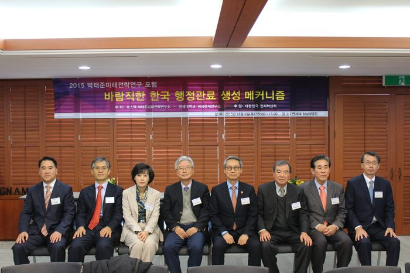
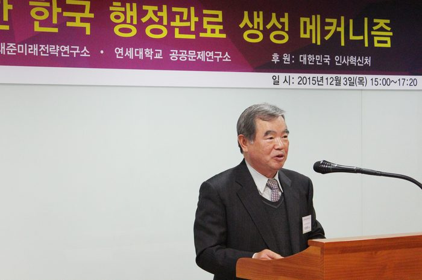
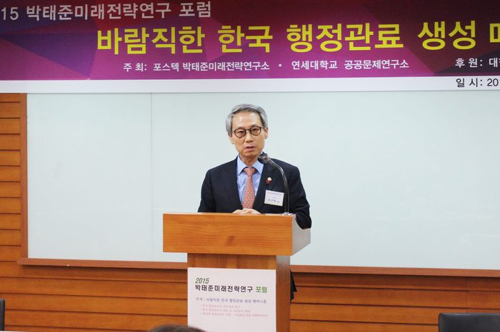
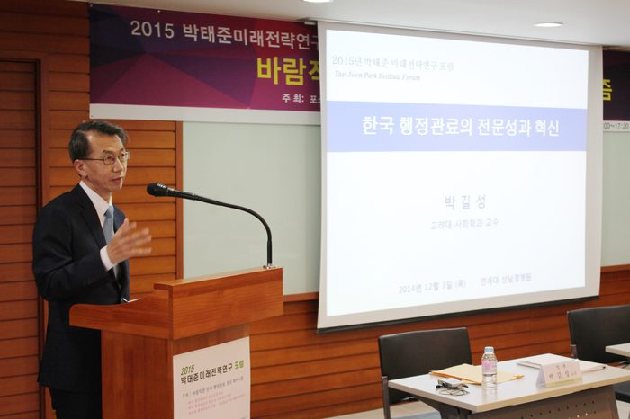
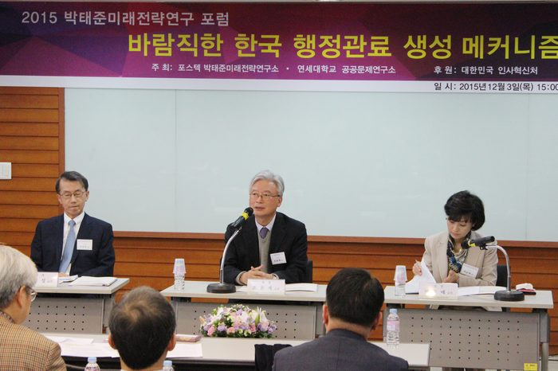
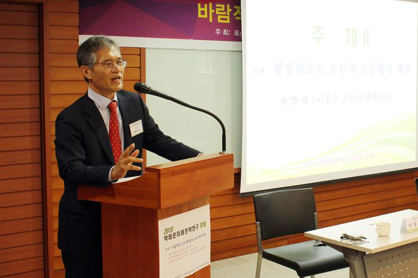
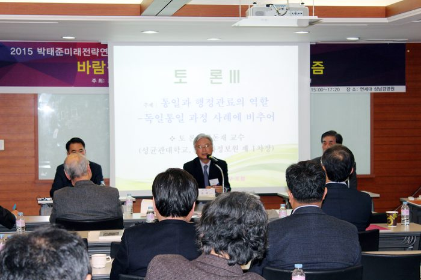
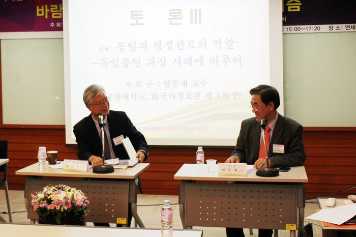
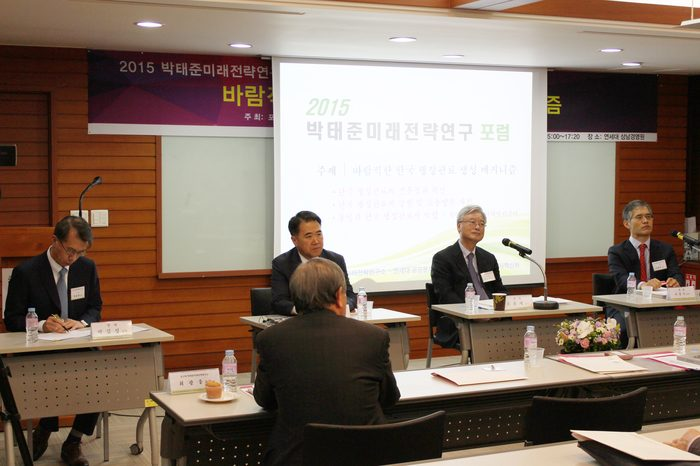
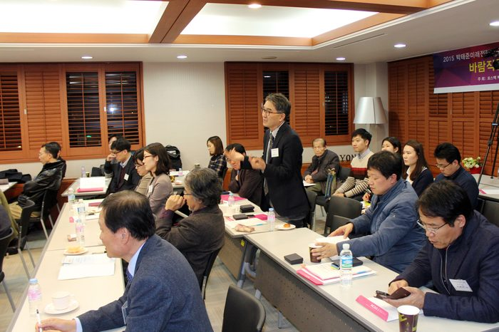

행사개요
행 사 명 : 2015 박태준미래전략연구 포럼
주 제 : '바람직한 한국 행정관료 생성 메커니즘'
- 한국 행정관료 엘리트의 생성 : 행정관료의 전문성과 혁신
- 행정관료의 충원 및 고용방식 개편
- 통일과 행정관료의 역할: 독일통일 과정 사례를 중심으로
기 간 : 2015년 12월 3일(목) 15:00~17:20
장 소 : 연세대 상남경영원(캠퍼스내) 6층 아이리스홀
프로그램
12015-12-03
| 시간 | 프로그램 |
|---|---|
| 15:00~15:10 | • 개회사 : 최광웅 박태준미래전략소장 • 축 사 : 이근면 인사혁신처장 |
| 발 제I | |
| 15:10~15:40 | ▣ 한국 행정관료 엘리트의 생성 : 행정관료의 전문성과 혁신 • 발 제 : 박길성 교수(고려대) • 좌 장 : 조윤제 교수(서강대) • 토 론 : 박순애 교수(서울대) |
| 발 제Ⅱ | |
| 15:40~16:10 | ▣ 행정관료의 충원과 고용방식 개편 • 발 제 : 이종수 교수(연세대) • 좌 장 : 조윤제 교수(서강대) • 토 론 : 서원석 박사(한국행정연구원 기획조정본부장) |
| 16:10~16:20 | 휴 식 |
| 발 제Ⅲ | |
| 16:20~16:50 | ▣ 통일과 행정관료의 역할 - 독일통일 과정 사례에 비추어 • 발 제 : 정창화 교수(단국대) • 좌 장 : 조윤제 교수(서강대) • 토 론 : 염돈재 박사(성균관대 초빙교수, 前국가정보원 제 1차장) |
| 16:50 ~ 17:20 | 종합토론 및 폐회사 |
연사
⊙ 개회사: 최광웅 소장 (포스텍 박태준미래전략연구소)
⊙ 축 사: 이근명 처장 (대한민국 인사혁신처)
⊙ 좌 장: 조윤제 교수 : 서강대학교 국제대학원 교수
주영국 한국대사
대통령비서실 경제보좌관 역임
⊙ 발제자
- 발제 I. 박길성 교수 : 고려대학교 대학원장
고려대학교 사회학과 교수
미국 유타주립대 겸임교수
미국 위스콘신대학교 사회학 박사
- 발제 II. 이종수 교수 : 연세대학교 행정학과 교수
헌법재판소 제도개선위원회 위원
대한민국 지역브랜드 대상 심사위원장
한국행정학회
영문학술지 편집위원장
한국지방자치학회 편집위원장
- 발제 III. 정창화 교수 : 현재 단국대 행정학과 교수
한국행정학회 연구위원장
한국행정연구원 수석연구원 역임
독일
Speyer국립행정대졸 행정학박사(Dr.rer.publ.)
한국외국어대졸
⊙ 토론자:
- 발제 I. 박순애 교수 : 서울대학교 행정대학원 교수
서울대학교 행정대학원 공공성과관리연구센터 소장
(전)서울대학교 경력개발센터 소장
인사혁신추진위원회 민간위원
공공기관운영위원회 민간위원
- 발제 II. 서원석 박사 : 한국행정연구원 본부장
- 발제 III. 염돈재 교수 : 성균관대학교 초빙교수
국가정보원 1차장
대통령 정책비서관 역임
참석자
⊙ 초청인사: 이근면 처장(대한민국 인사혁신처), 송복 명예교수(연세대학교), 조휘갑 이사장(선진사회만들기 연대), 민경찬 교수(연세대학교)외
⊙ 포스텍 박태준미래전략연구소 위원 : 조윤제교수 외 12명
⊙ 인사혁신처
⊙ 연세대학교 교수 및 학생외 다수
내용
관료의 전문성만 잠식하는 순환보직․폐쇄적 임용․형식적 재교육
한국 행정 관료제는 5급 공채 ‘면접시험’부터 개선해야
한국 관료는 통일과정에서 내적통합의 ‘정밀기계장치’가 돼야
행정 관료의 목소리를 직접 듣는 제도도 제대로 갖춰야
관피아, 관치망국, 관료화 등은 한국사회에 팽배한 ‘관료 불신’을 대변하는 단어들로서 미래전망에 있어서 심각한 불안요인이기도 하다. 이 절박한 시대적 사회적 이슈에 대해 민간연구소와 학자들이 그 원인을 진단하고 해법을 제안하는 ‘미래전략포럼’을 개최한다.
포스텍 박태준미래전략연구소(소장 최광웅)가 12월 3일 오후 3시부터 연세대 상남경영원에서 대한민국 인사혁신처(처장 이근면)의 후원으로 2015년 미래전략포럼 <바람직한 한국 관료 생성 메커니즘>을 연세대 공공문제연구소와 공동 개최한다. 이번 포럼은 박태준미래전략연구소가 기획한 관련 주제에 대해 지난 10개월간 연구해온 교수 3인이 발제하고 전문가 3명이 토론한 후 발제와 토론을 경청한 다수 학자들이 종합토론에 나서는 형식으로 진행된다.
이번 포럼은 조윤제 교수(서강대학교 교수, 경제학)가 좌장을 맡아 시작부터 마무리까지 진행을 하며, 박길성 교수(고려대 대학원장, 사회학)의 발제 <한국 행정 관료의 전문성과 혁신>에 대한 토론은 박순애 교수(서울대 행정대학원), 이종수 교수(연세대 행정학과)의 발제 <한국 행정 관료의 충원과 고용방식 개편>에 대한 토론은 서원석 박사(한국행정연구원 기획조정본부장), 그리고 정창화 교수(단국대 행정학과)의 발제 <통일과정에서 한국 행정관료의 역할>에 대한 토론은 국가정보원 1차장을 지낸 염돈재 성균관대 교수가 각각 맡는다.
포럼을 후원한 이근면 인사혁신처장은 축사를 통해 공직사회가 시대의 흐름을 반영하고 변화해야 한다는 인식을 가질 필요가 있으며, 인사혁신을 위해 지난 1년간 시도했던 많은 변화들을 앞으로 더욱 발전시켜 국가의 성장동력이 되는 경쟁력 있는 공무원과 공직사회를 만들어가겠다고 말했다.
첫 번째 발제에서 박길성 교수는 “무능의 사회적 비용은 부패의 사회적 비용보다 훨씬 크다”고 전제하고 “오늘날 한국 행정관료조직의 가장 큰 문제는 전문성의 결여와 전문성이 축적되기 어려운 시스템”이라며 그 주요원인이 “순환보직, 폐쇄적 임용, 형식에 그치는 교육훈련”이기 때문에 “집체식으로 반복되는 중앙공무원교육원에 대한 혁신, 1973년에 제정된 공무원교육훈련법에 대한 근본적 재검토를 포함해 다층적인 혁신이 절실히 요청”되는데, 여기에는 무엇보다 “거시 혁신과 미시 혁신을 동시에 이끌어나갈 정치적 리더십의 역할이 중요하다”고 역설한다. 또한, 박 교수는 “행정관료에게 일방적으로 쏟아지는 때로는 부당하고 편향된 시선에 대해 행정관료가 직접 자기 목소리를 낼 수 있는 방안으로 <행정관료 리포트> 정도는 주기적으로 발간해야 한다”면서 “개인의 문제인지, 조직의 문제인지, 관료제의 문제인지, 사회문화적인 문제인지”를 정부와 국민과 관료들이 다함께 알 수 있을 것이라는 방안도 제시한다. (첨부한 요약문 참조)
두 번째 발제에서 이종수 교수는 올해 5급 공채시험(행정고시)에 면접위원으로 참여한 정부의 전‧현직 국장 4인, 현직 교수 3인, 그리고 합격자 6인에 대한 심층면접에 근거하여 “5급 공채시험의 3차 면접시험부터 당장 혁신해야 한다”며 충원의 개선방안부터 강하게 주장한다. 또한 이종수 교수는 “면접의 세팅 자체가 형식적, 표피적 답변과 토론에서 머물게 하는 상태여서 충원과정에서 가장 중시해야할 고급 공무원으로서의 정신자세, 창의력, 발전가능성에 대해 평가하는 것이 아예 불가능해진다”고 지적하고 면접시험을 개선하기 위해서는 “문제해결형 과제를 제시해야 한다”고 강조한 뒤, 5급 공채시험의 장기적 개혁과제는 “면접을 개선한 5급 공채, 민간 경력자 채용 도입, 대학의 전공과 적성을 그대로 살리는 채용 등 3가지 트랙”으로 나가야 바람직하다고 제시했다.(첨부한 요약문 참조)
세 번째 발제에서 정창화 교수는 독일통일과정에서 독일 행정관료들이 내적통합에 기여하는 ‘정밀기계장치’와 같은 역할을 해냈던 사례들에 대한 연구를 근거로 해서 “한반도 통일과정에서 한국 행정관료들의 가장 중요한 역할이 독일의 경우와 같이 내적통합을 위한 ‘정밀기계장치’의 역할을 하는 것”이라고 제시하고, 그 역할을 크게 두 가지로 분류해서 “남북한의 헌정통합을 위한 지원, 대통령비서실의 제도적 역량 강화, 남북한 부처별 행정의 수비범위 사전설계 등과 같은 <제도통합을 위한 질서형성의 역할>과 <민주시민교육의 제도화와 지원 역할>이 절실히 요청된다”고 예견했다.
→ 포럼 영상 바로가기









